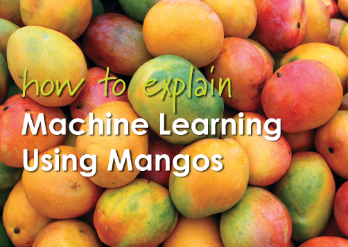
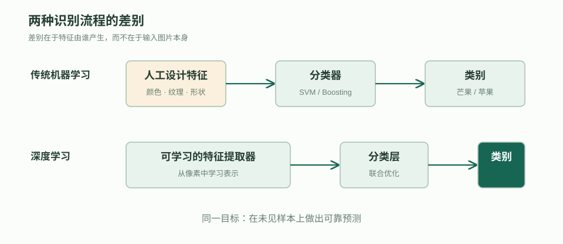
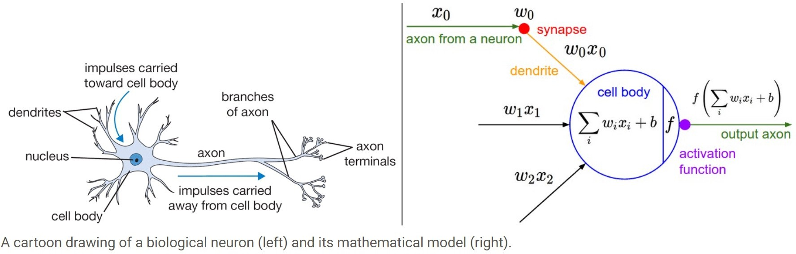
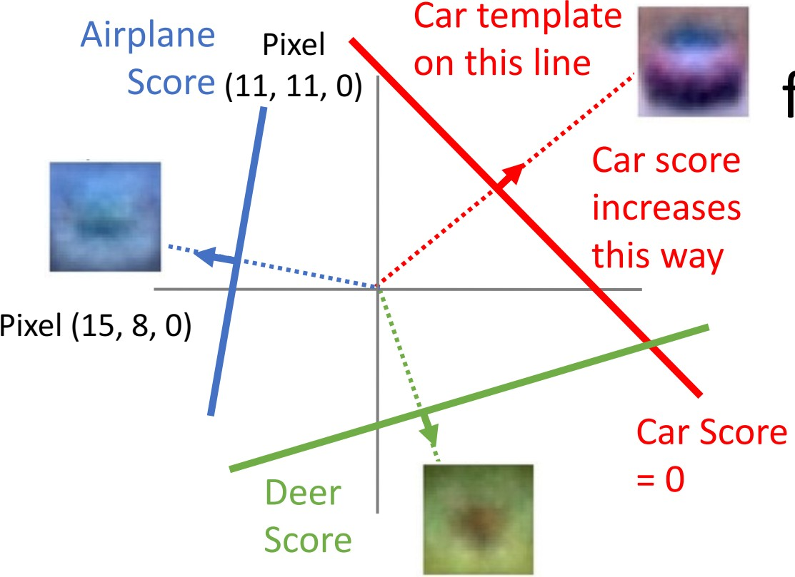
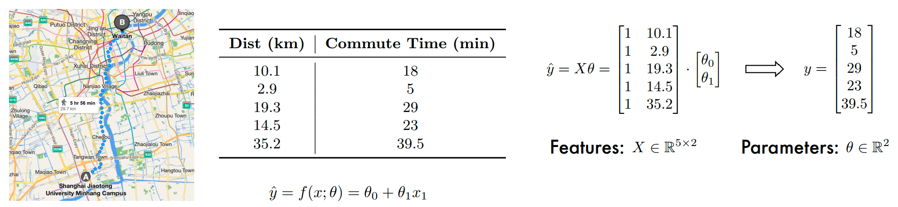
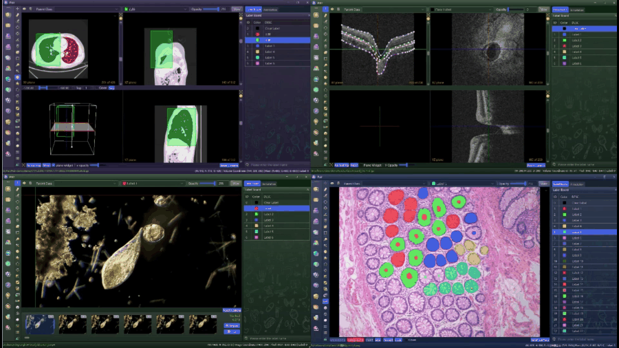

符号主义 Symbolism
- 核心
- 从数理逻辑出发，用符号、知识和规则表达问题，再通过逻辑运算进行推理。
- 优势与局限
- 规则清晰、推理过程较易解释；但面对模糊或不确定的信息时容易变得脆弱，知识获取与规则维护的成本也较高。
- 典型领域
- 知识表示与推理、专家系统、搜索与规划、规则约束，以及基于规则的语言处理。
Fundamentals of Artificial Neural Networks
从芒果识别出发，建立机器学习与深度学习的直观区别；再从神经元、训练闭环和两个案例，走完一条可学习模型的完整路线。
先考虑两个直观问题：怎样判断一个水果是不是芒果，以及怎样判断一个芒果是否甜。我们会观察颜色、形状、纹理和成熟度，也会利用过去见过、尝过的水果积累经验。机器学习（Machine Learning, ML）把这条思路变成可训练的方法：从带有答案的样本中学习规律，再对新水果作出判断。

可观察的信息称为特征（feature），已确认的答案称为标签（label）。“是不是芒果”和“是否甜”都可以输出离散类别，属于分类（classification）。进一步延伸，如果问题改成“甜度或糖度是多少”，输出连续数值，才对应回归（regression）。
传统机器学习通常先由人决定应该观察哪些特征，再训练分类器（classifier）；深度学习（Deep Learning, DL）则让多层神经网络同时学习“应该看什么”和“怎样分类”。两者都从数据中学习，主要区别不是有没有模型，而是特征表示主要依靠人工设计，还是由模型自动学习。

训练时，模型先通过前向传播（forward propagation）给出预测，再用损失函数（loss function）衡量预测与标签的差异，并通过反向传播（backpropagation）和优化器（optimizer）调整参数。这个过程反复进行；实际预测时只需要输入、训练好的模型和输出。
输入 → 模型 → 预测；预测与标签计算损失，梯度和优化器更新模型参数。
人工智能的兴盛也体现在科学研究方法的变化上。2018 年图灵奖认可了深度学习的基础贡献；2024 年诺贝尔物理学奖认可了通过人工神经网络实现机器学习的基础性发现与发明，同年的诺贝尔化学奖相关成果包括 AlphaFold 的蛋白质结构预测。学习模型开始帮助研究者从复杂数据中寻找规律，并服务于具体科学问题。
人工智能（Artificial Intelligence, AI）已经广泛进入生物制药、自动驾驶、人形机器人和大语言模型等领域。在生物制药中，AlphaFold 等系统根据生物分子信息预测结构；自动驾驶系统从道路图像和传感器数据中识别车辆、行人与可行驶区域；人形机器人利用身体状态反馈维持平衡并控制动作；大语言模型根据文本上下文生成回答、摘要或代码。它们的输入、目标与评价标准并不相同，却都被称为人工智能。这就需要先回答一个更基础的问题：机器表现出什么能力时，我们会认为它具有智能？

对智能的讨论并不是在今天才出现。图灵（Alan Turing）提出的模仿游戏，把抽象的“机器是否思考”改写为可以观察的对话表现。图灵测试（Turing Test）让询问者与身份隐藏的人类和机器进行文字问答，再根据回答判断身份。它关注受测条件下的语言行为，不能单独证明系统具有理解、意识或通用智能。

图灵在 1950 年曾预测，未来机器可以在五分钟问答中使普通询问者正确识别身份的概率不超过 70%。这是有具体时间条件的历史预测，不是所有图灵测试的统一通过规则。
同样连续询问三次，固定系统重复“是的”，利用历史的系统则识别出重复提问。
连续提问“你会下国际象棋吗？”时，固定规则系统可能每次给出同样回答，而利用对话历史的系统会根据重复提问调整表达。大语言模型（Large Language Model, LLM）也能为同一问题生成多种措辞。两个 AI 助手甚至可以轮流接话，使交流在表面上接近人类对话；这与图灵测试关注的可观察语言行为相呼应，但语言自然并不能单独证明系统真正理解了谈话内容。
片段中的两个 AI 助手能够轮流回应并维持对话。这说明系统可以生成连贯的语言行为，却不能据此判断它是否理解现实、能否学习陌生任务，或能否把已有知识迁移到新的问题。
类人对话只是智能的一种外在表现。弱人工智能（Weak AI）通常在边界明确的任务中表现良好；通用人工智能（Artificial General Intelligence, AGI）则追求更广泛的能力，包括理解情境和目标、从新经验中学习、运用知识推理，以及把已有能力迁移到不同任务与环境。于是，问题便从“机器能否表现得像人”进一步转向“这些能力应当通过什么机制实现”，不同回答由此形成了不同的研究流派。
20 世纪 40 至 50 年代，数理逻辑、控制论、信息论、形式神经元和图灵提出的机器智能问题共同构成早期基础。此后，符号主义、联结主义和行为主义先后兴起：它们在时间上相互交叠，并不是前一种思想结束后，后一种思想才开始。沿着这条发展线索，可以看到研究重点从显式符号与逻辑推理，扩展到神经元连接学习，再扩展到智能体与环境之间的感知、行动和反馈。

三种流派既有区别，也持续相互影响。联结主义推动了神经网络与深度学习，行为主义强调的环境反馈与强化学习密切相关；符号主义并未被淘汰，仍用于知识表示、规划、规则约束与结果检查，并能与学习模型结合。
人工智能（Artificial Intelligence, AI）是最宽的目标和研究范围，关注如何让计算机完成通常需要智能的任务。机器学习（Machine Learning, ML）是实现其中一部分目标的方法，让系统从数据中学习规律并作出分析或预测。深度学习（Deep Learning, DL）则是机器学习中的一类具体技术，使用多层神经网络自动学习数据表示。

从人工智能到机器学习再到深度学习，研究范围逐步收窄，实现方式也逐步具体。机器学习不是实现人工智能的唯一方法，人工智能还包括规则推理、搜索与规划等方法；深度学习也不是机器学习的全部。
因此，从人工智能进入深度学习，并不是把人工智能等同于深度学习，而是选择其中一条影响广泛的技术路线继续展开。接下来将沿着联结主义的发展线索，梳理深度学习的关键阶段。
深度学习的发展并不是一条持续上升的直线。形式神经元提出了计算抽象，感知机把学习引入模型，反向传播使多层网络能够训练；随后，算法、计算能力和数据规模逐步汇合，才推动深度学习进入广泛应用阶段。
McCulloch 和 Pitts 提出 M-P 神经元模型（McCulloch–Pitts Neuron Model），把神经元抽象为“带权输入汇总后与阈值比较”的计算单元。连接权重表示不同输入的影响，阈值决定神经元是否激活，为人工神经网络提供了最早的形式化基础。
1958 年的感知机（Perceptron）和 1960 年的自适应线性神经元（Adaline）让连接权重能够从数据中调整。早期模型常用阶跃函数给出 0 或 1 的输出；平滑的 Sigmoid 函数则为后续可微模型提供了另一种激活方式。1969 年对单层感知机能力边界的系统分析，也暴露了当时模型的局限。
有限的计算能力、较高的计算复杂度和工程实现难度，使早期神经网络难以达到预期效果，相关研究和投入随之降温。
神经网络（Neural Network）由相互连接、能够调整权重的简单单元组成。反向传播（Backpropagation）能够把输出误差逐层传回网络并更新参数，使多层网络的训练成为可行方法，推动联结主义再次兴起。
深层网络仍受到训练困难、计算资源不足、可用数据有限和效果不稳定等问题制约。支持向量机（SVM）、Boosting 等传统机器学习方法在这一时期得到更广泛应用。
深度信念网络（Deep Belief Network）等研究表明，更好的模型设计和训练方式可以改善深层网络。与此同时，计算能力提升和大规模数据逐渐具备，深度模型重新成为重要研究方向。
AlexNet 在 ImageNet 大规模视觉识别挑战中把 top-5 错误率降至约 15.3%，明显低于第二名约 26.2%。统一基准上的显著差距，使深度学习进入快速发展阶段。
Seq2Seq 和生成对抗网络（GAN）拓展了序列建模与生成任务，ResNet 支持训练更深的网络，Transformer 以注意力机制改变序列处理方式，BERT 与 GPT-1 则推动大规模预训练模型发展。
GPT 系列、CLIP、DALL-E、扩散模型和 ChatGPT 等把深度学习扩展到文本生成、图像生成和多模态任务，模型开始在统一表示基础上处理更广泛的输入与输出。
大数据提供丰富信息，也要求模型具备合适的表示能力。更深的网络组合层次化特征，更广的输入帮助捕捉上下文，领域知识则约束合理的表示和模型容量，让学习更有效率。
层次化特征学习、上下文信息与领域知识共同影响表示能力和学习效率。
这些方向重新连接到特征学习（Feature Learning）：让特征转换器与分类器共同优化，利用数据学习适合任务的表示。迁移学习和多模态应用是这条路线的进一步延伸。
前面已经看到，深度学习使用多层网络学习数据表示。现在从最小的计算单元开始：一个人工神经元接收一组数值输入，按各自的重要性加权，再决定向下一层传递什么信息。许多这样的单元并排组成层，层与层相连，便形成多层感知机（Multi-Layer Perceptron, MLP）。

生物神经元通过树突接收信号，在胞体汇总，并通过轴突传递输出。人工神经元借用这一计算类比：输入向量 x 有 D 个分量，各分量乘以权重后相加，再加偏置 b。
权重 w 表达各输入的影响，偏置 b 调整响应位置。输出先记为 a = φ(z)，其中 φ 是激活函数的占位符；当前先理解线性计算，稍后再解释激活为什么必要、如何计算。
输入 [2, −1]，权重 [0.5, 1]，偏置 1，得到加权和 1。
分类任务需要为每个类别给出一个分数。将 C 个计算单元按行堆叠，得到线性分类器 f(x) = Wx + b。矩阵 W 的每一行对应一个类别的权重，b 的每个分量对应该类别的偏置。
D 个输入经过 C 行权重，产生 C 个类别分数；W 的形状为 C × D。
先确认输入最后一维是否为 D，再检查权重的列数是否为 D，最后确认输出维度与类别数或下一层宽度一致。形状匹配是网络计算能够进行的首要条件。
把一张 2 × 2 图像按行展开，得到四个像素构成的输入向量 [56, 231, 24, 2]。同一个输入分别乘猫、狗、船三行权重，再加对应偏置，产生三个分数。这里的分数可以为负，也不必相加等于 1。
猫 −96.8，狗 437.9，船 60.75；狗的分数最高，当前预测与猫的真实标签不一致。
一个类别的分数取决于所有像素与本类别权重的对应关系。比较分数形成类别判断；预测与真实标签的差异，则为后续学习提供信号。

线性分类器依据 Wx + b 比较分数，本质上用直线、平面或更高维超平面划分输入空间。它能处理许多简单边界，却无法分开交错分布的类别。异或（XOR）问题正是典型例子：四个角点的同类样本彼此分离，没有一条直线能同时完成正确划分。

引入隐藏层（hidden layer），先将 D 维输入映射为 H 维中间表示，再计算 C 维输出。这构成两层网络。φ 暂时标记隐藏层的激活环节，下一步检验它的作用。
h = φ(W₁x + b₁)，f(x) = W₂h + b₂；W₁ 为 H × D，W₂ 为 C × H。
全连接表示上一层每个单元都与下一层每个单元相连，矩阵中的一个元素对应一条连接。深度是连续变换的层数，宽度是每层单元数；增加容量后，还要通过验证检查是否改善泛化。
较浅与较深的网络分别展示连接层数；每层单元数决定宽度。
先去掉 φ，让隐藏层只计算 h = W₁x + b₁。把 h 代入输出，可以合并两层的权重和偏置。
合并后仍是一个线性分类器。层数增加并没有突破原来的表达边界，因此需要在层间加入非线性激活。
整流线性单元（Rectified Linear Unit, ReLU）计算 max(0, z)。正区间的局部导数为 1，负区间为 0。若某个单元长期落在负区间，它可能长期无法获得有效更新，这称为 dying ReLU。
ReLU 的响应曲线在负区间为零，在正区间沿直线增长。
Leaky ReLU 在负区间保留很小的斜率，使负输入仍有响应和梯度。下图用同一个输入对照两种函数，示例负区间斜率取 0.1。
Leaky ReLU 在负区间保留 0.1 的斜率。
Sigmoid 将一个标量压到 0 与 1 之间，常用于二分类输出。两端趋于饱和时，局部导数接近零；这会影响误差向前层传播。
σ(z) = 1/(1+e⁻ᶻ)，局部导数为 σ(z)(1−σ(z))。
Softmax 将一组类别分数转为总和为 1 的概率分布。一个分数改变会改变共同分母，因此其他类别的概率也随之调整。隐藏层、二分类、多分类和回归的输出形式不同，激活函数应匹配所在位置和任务。
pᵢ = eᶻⁱ/Σⱼeᶻʲ，各类别概率总和为 1。
假设要根据到市中心的距离预测通勤时间。五组距离与时间是观测样本，模型用截距 θ₀ 与斜率 θ₁ 计算预测。平方损失汇总预测与观测的差异，训练寻找使这一差异更小的参数。

对 θ₀ 和 θ₁ 分别求偏导，再沿负梯度更新。下面从同一组数据计算一次更新，比较更新前后的损失；下一节会把求导过程推广到多层网络。
损失对截距与斜率的梯度分别为 −22.9、−495.98；使用小步长可以降低这组数据上的损失。
距离之外，星期和交通方式也会影响通勤。它们要编码为模型可处理的输入；公交、自行车、汽车属于无序类别，可使用独热编码，避免让类别编号产生不存在的大小关系。
增加星期、交通方式等特征后，线性模型组合各个输入。
线性模型对参数线性，并不意味着对原始距离只能拟合直线。人工加入 d² 等特征，就能得到关于距离的曲线；难点变成了怎样选择合适的特征。
ψ(d) = [1, d, d²]，模型学习这些人工特征的系数。
MLP 用隐藏层学习输入的组合表示，再输出连续通勤时间。前向传播按连接顺序完成计算；损失将表示和预测联系到目标，参数更新让各层共同学习。
h = φ(W₁x + b₁)，预测时间 = W₂h + b₂。
MLP 的结构规定了怎样计算预测，权重和偏置在开始时仍未知。训练的任务是利用带标签的数据寻找一组参数，使模型在相似的新样本上也能给出有用结果。这个过程包含目标、求导、更新和泛化四个彼此关联的环节。
模型 fθ 的 θ 收集全部权重和偏置。单样本损失衡量预测与标签的差异；训练样本上的平均损失称为经验风险（empirical risk）。训练希望找到使这一目标较小的参数。
L(θ) = (1/n)Σᵢℓ(fθ(xᵢ), yᵢ)。
标量损失对向量求导得到梯度，向量输出对向量输入求导得到雅可比矩阵。损失对某个参数矩阵的梯度，形状应与该参数矩阵相同。统一使用列向量，可以沿每层输入和输出检查维度。
标量梯度为 D × 1，C 维输出对 D 维输入的雅可比为 C × D。
一个参数通常先影响加权和，再影响激活，最后影响损失。链式法则把各段局部变化率相乘；如果存在多条影响路径，还要把各路径的贡献相加。
w = 1 时，z = 2w + 1 = 3，a = z²；da/dw = 2z × 2 = 12。
负梯度给出局部下降方向，学习率 η 控制步长。每次更新后，要在新位置重新计算梯度；过大的步长仍可能使损失增大。
L(w) = (w−1)²，从 w = 3 出发，学习率 0.25 将参数更新为 2，损失从 4 降为 1。
前向传播保存每层输入、加权和与激活输出；反向传播（backpropagation）从损失出发，沿同一张计算图回传局部导数。δ 表示损失对某层加权和 z 的导数，不是该层预测与标签的直接差值。
h⁽⁰⁾ = x；每层计算 z⁽ˡ⁾ = W⁽ˡ⁾h⁽ˡ⁻¹⁾ + b⁽ˡ⁾，再计算 h⁽ˡ⁾ = φ(z⁽ˡ⁾)。
以平方损失和 Sigmoid 输出为例，先求损失对预测的导数，再乘输出激活的导数。更换损失或输出激活时，这一步也会随之改变。
δ⁽³⁾ = (ŷ−y)ŷ(1−ŷ)，对应 L = ½(ŷ−y)²。
当前隐藏单元连接到下一层多个单元，先用下一层权重汇总它们传回的影响，再逐元素乘本层激活的局部导数。权重转置负责把依赖方向和形状转回当前层。
δ⁽ˡ⁾ = (W⁽ˡ⁺¹⁾)ᵀδ⁽ˡ⁺¹⁾ ⊙ φ′(z⁽ˡ⁾)。
某条连接的梯度等于目标单元的误差信号乘来源单元的激活。把全部连接组合起来，就是当前层误差与上一层输出的外积；偏置梯度直接等于该层 δ。
∂L/∂W⁽ˡ⁾ = δ⁽ˡ⁾(h⁽ˡ⁻¹⁾)ᵀ，∂L/∂b⁽ˡ⁾ = δ⁽ˡ⁾。
输入为 [1, 2]，标签 y = 1，三层都使用 Sigmoid，损失为 ½(ŷ−y)²。下面沿固定参数依次求前向结果、损失、各层误差与更新，不在中途更换网络。
W₁ = [[2,1],[1,3],[3,2]]，b₁ = [1,2,3]；W₂ = [[1,1,2],[3,2,2]]，b₂ = [2,1]；W₃ = [[1,3]]，b₃ = [2]。
第一层加权和为 [5, 9, 10]，经过 Sigmoid 得到三个激活输出。
第二层使用第一层的三个激活作为输入，计算两个新的响应。
输出加权和约 5.99648，预测约 0.99751869，损失约 3.07845 × 10⁻⁶。
激活接近饱和时，局部导数很小。将各条路径的贡献汇总，可以观察到越靠前的层获得的梯度也很小。更新使用未舍入的梯度，显示值只作阅读近似。
输出层先取得 δ，随后依次回传到第二层和第一层。
以学习率 0.1 同时更新全部权重与偏置，再次前向计算检查损失。
框架记录计算图并执行反向求导。开发者仍要明确损失定义、梯度形状与更新顺序；重复训练步骤前要清空旧梯度。
前向 → 损失 → 清空旧梯度 → 反向求导 → 参数更新。
训练集上的损失很小，表示模型已适应这些样本；它在未见数据上的表现才反映泛化能力。欠拟合（underfitting）常表现为训练和测试都较差，可能来自模型表达不足或训练不充分。过拟合（overfitting）则常表现为训练很强、验证或测试表现变差，模型可能记住了样本中的偶然细节。

在数据损失上增加参数惩罚。L1 使用绝对值，倾向得到稀疏权重；L2 使用平方，倾向连续收缩。下面的约束区域展示两者为什么对参数有不同偏好，正则强度由验证集选择。
Ltotal = L + λΣ|wⱼ| 或 L + λΣwⱼ²。

训练时随机屏蔽部分激活，让网络减少对单个单元的依赖。采用 inverted dropout 时，保留的激活除以保留概率；推理使用完整网络，无需再缩放。
保留概率 0.5 时，保留激活乘以 2；不同训练批次使用不同掩码。
训练损失继续下降时，验证损失可能已经回升。早停保存并恢复验证表现最好的轮次；测试集不能决定停止时机。数据增强则增加观察变化，但必须保留原有标签含义。
示例验证损失在第 5 轮最低，随后回升，应该保留第 5 轮参数。
同一个芒果的翻转、轻微旋转仍保留芒果类别。
全批量使用全部训练样本，每步成本较高；单样本更新快，但梯度估计波动较大；小批量在成本与稳定性之间取得折中。
一次更新分别使用全部、一个或一部分样本。
指数移动平均逐步降低旧梯度的影响。Momentum 用历史方向与当前梯度共同更新，在来回变化的方向上减少波动；Nesterov 进一步在动量预测的位置求梯度，提前修正方向。
历史平均 mₜ = 0.8mₜ₋₁ + 0.2gₜ，积累持续方向并缓和反复振荡。

Nesterov 在 θₜ − γvₜ₋₁ 的预估位置计算梯度。
累积每个参数的梯度平方，让历史梯度较大的方向获得较小的有效步长。但累积量只增不减，训练后期步长可能变得过小。
Gₜ,ᵢ = Gₜ₋₁,ᵢ + gₜ,ᵢ²，步长按 √Gₜ,ᵢ 调整。
用梯度平方的移动平均代替永久累积，缓解有效步长持续缩小的问题。Adadelta 还维护更新平方的平均，用历史更新尺度与梯度尺度的比值决定更新。
梯度尺度与更新尺度分别采用指数移动平均。
Adam 同时维护梯度的一阶矩和二阶矩，并修正零初始化造成的早期偏差。AdamW 再将权重衰减单独作用于参数，避免让衰减项经过自适应分母缩放。
Adam 使用修正后的方向平均与梯度平方平均。
AdamW 将参数收缩与自适应梯度更新分开计算。
完全相同的同层单元会获得相同响应，难以学习不同特征；随机初始化先打破这种对称性。接下来还要选择合适的尺度，让信号与梯度不随层数持续放大或缩小。
不同随机起点使各单元能够学习不同特征。
在线性激活近似下，假设输入和权重零均值、彼此独立，各输入贡献近似不相关且同方差。加权和有 fan-in 条输入连接，因此其方差近似等于输入方差乘 fan-in，再乘权重方差。
Var(Wᵢxᵢ) = Var(Wᵢ)Var(xᵢ)，各项方差按输入连接数累加。
Var(z) ≈ fan-in × Var(W) × Var(x)；保持前向方差需要乘积约为 1。
反向传播从 fan-out 条输出路径汇总梯度，同样希望梯度方差保持稳定。前向与反向的条件可能不同，Xavier 用输入和输出连接数的折中确定方差。分析依赖上述近似假设。
Xavier 权重方差为 2/(fan-in + fan-out)。
He 初始化进一步考虑 ReLU 对约一半响应的屏蔽，常取权重方差 2/fan-in。方差与标准差要区分：正态采样的标准差是所选方差的平方根。
Xavier 配合近似线性或对称激活，He 常与 ReLU 配合。
不同特征范围悬殊时，同一个学习率难以适应各个方向。Min-Max 缩放和标准化改变数值表示；所有统计量只在训练集确定，再复用于验证、测试和新样本。标准化不会自动消除偏态，常量特征需单独处理。
Min-Max 使用训练最小值与最大值；标准化减训练均值，再除训练标准差。
从历史病例预测病人是否患有糖尿病，再从乳腺超声图像定位病变。这两个任务把问题定义、获取数据、选择特征、清洗、训练、评估与部署连成完整流程。目标先确定，数据和监督才能围绕它组织。
一行历史病例是一个样本（sample），输入列是特征（feature），“是否患糖尿病”的已确认结果是标签（label）。某行输入的具体数值或类别称为特征值。标签来源必须可信，不能只凭表格里已有的一列数值，就认为已经建立了可靠的诊断依据。
五条病例记录包含年龄、姓名、体重、身高、BMI、血糖、胰岛素、家族史和患病标签。
特征选择应回到预测目标和数据来源。ID、姓名等标识字段通常无法提供可迁移的预测信息；高度相关或由同一信息计算而来的字段也可能形成冗余。选择规则只能从训练数据中学习，否则会把验证或测试信息提前带入训练过程。
姓名、体重和身高退出输入集合；ID 保留用于追踪记录，不进入模型。
这个示例保留 BMI 表达体型，移除与其重复的体重、身高，展示一种特征筛选方案。实际选择应结合任务验证，不能把这一处理当成所有模型的固定规则。
原始表格常有缺失、异常、不一致编码和量纲差异。处理前要先确认它们代表录入错误、测量差异、真实但罕见的个体，还是业务流程中的缺口。缺失值可以填补、单独编码、删除记录或采用能处理缺失的模型；异常值的处理同样需要结合来源与任务，而非只凭数值大小决定。
为了比较清洗方案，这一步把第 4 条病例的血糖视为未记录，形成血糖和胰岛素两个字段缺失的情境。第 2 条病例缺 BMI。较大的血糖观测仍需核查，不能仅凭大小直接删除。
第 2 条病例缺 BMI，第 4 条在清洗情境中缺血糖和胰岛素。
将这五条记录视作已划分出的教学训练子集。本示例选择删除两个测量字段缺失的第 4 条记录；剩余三个已知 BMI 为 28.1、32.0、30.2，均值 30.1，用它填补第 2 条病例。后续始终保留 ID 1、2、3、5，目标标签保持一致。实际删除与填补方案需要结合缺失原因和任务验证。
先删除记录 4，再用 (28.1 + 32.0 + 30.2)/3 = 30.1 填补记录 2 的 BMI。
训练记录的年龄范围为 29–61 岁。Min-Max 将这一列映射到 [0,1]，例如 45 岁变为 0.5；其他列此时仍保持填补后的值。
年龄新值 = (年龄−29)/(61−29)。
继续对 BMI 和胰岛素分别标准化：减去该列训练均值，再除以该列标准差，使这组训练值均值为 0、标准差为 1。年龄继续保留归一化结果。标准化不会消除原始分布的偏态。
在同一张表上标准化 BMI 与胰岛素，保留年龄缩放和全部样本标签。
最后将血糖列按示例分箱规则映射为低值组、中值组、高值组，说明连续变量怎样变成类别。分箱表示输入的编码方式，不是目标标签，也不是诊断结论。此前其他列的处理结果继续保留。
只改变血糖列，保留之前的年龄、BMI 和胰岛素变换。
训练集用于学习权重等模型参数；验证集用于选择网络宽度、学习率、正则强度和停止轮次；测试集留作最终的独立评价。70/20/10 只是一个便于理解的示例比例，实际划分应考虑样本量、类别分布、时间顺序和任务风险。三个集合不能重叠，且同一实体的高度相关记录也应避免跨集合泄漏。
训练、验证、测试分别学习参数、选择方案和独立评价。
权重、偏置由训练更新，属于参数；批量大小、学习率、深度等由人为设定或搜索，属于超参数。“是否患病”输出离散类别，是分类；预测连续数值则是回归。
分类与回归描述输出类型；判别式与生成式描述学习目标。
判别式模型学习病例特征到患病目标的关系；生成式模型刻画数据分布，可以产生新的模拟记录。带有确诊标签时，有监督学习直接学习这一映射；没有标签时，无监督学习可以寻找相似病例的分组，但这些分组不自动等于诊断类别。
相同病例特征在有标签与无标签时，具有不同学习目标。
现在希望从乳腺超声图像中定位病变。图像可以提供输入，但训练还需要与位置目标相匹配的标签。首先区分粗略标注与细致标注。
原始超声图像输入模型，配对的区域掩码提供空间监督。
诊断报告或 EMR 可以提供良／恶性、疾病类型等信息，但没有直接给出病变像素位置。
细致标注由医生使用 LabelMe、3D Slicer、ITK-SNAP 等工具逐像素勾画器官或病灶，提供轮廓和掩码。其成本与一致性要求更高，却能直接告诉模型区域位置。

作为补充对照，图像级标签、边界框和像素级掩码分别提供不同粒度的信息。获取标签的方法与模型希望输出的内容需要对应。
图像级类别、框坐标与像素掩码提供不同的空间监督。
图像预处理可包括裁剪到统一视野、强度归一化和噪声处理，但每一种变换都要检查是否保留任务所需信号。标注昂贵时，有监督学习使用图像与标签直接学习；半监督学习让少量标注引导大量未标注图像；无监督学习只利用图像本身的结构。这三种设定的核心区别来自监督信号的可得性。
有监督使用图像与标签，半监督使用少量标签和大量未标注图像，无监督只从图像自身寻找结构。
性能改进可以来自更适合任务的模型结构、更高质量的数据、更合理的训练设置或模型集成。Bagging 以相对独立的基模型降低预测方差；Boosting 按顺序训练模型，后续模型更关注已有模型没有处理好的部分。两者都是候选方案，能否使用仍取决于独立评价结果、成本和部署约束。

模型评估观察预测误差和适用性；模型选择依据验证表现比较候选方案。选定后再使用独立测试评价泛化。为完成这一过程，需要分别回答两个问题。
留出法划分集合，交叉验证轮换训练与验证，自助法通过有放回采样组织评价。
通勤时间预测可以用均方误差，糖尿病分类可以用错误率或准确率。病变分割还可以考察预测区域与标注区域的重合程度。数据如何划分与误差怎样计算，是两个不同的问题。
均方误差衡量连续预测差异，错误率和准确率衡量类别判断。
完整流程从问题定义开始，经过数据获取、特征选择、清洗、训练、模型评估与选择，再进入上线运行。部署后，新样本必须经过与训练阶段一致的特征工程和预处理；数据分布、性能和失败模式仍应持续监测。下一讲将把这些基础放入图像任务，进一步学习卷积神经网络如何利用空间结构。
明确任务 → 获取并划分数据 → 训练 → 验证选择与独立评价 → 保存处理规则和模型 → 上线监测。